Abra o Studio e escolha BASEPLATE

Foto da tela.
Projeto novo, como sempre. Role a página para baixo até a fileira Abrir um modelo e clique no primeiro, o Baseplate.
- Apareceu uma janelinha de Boas-vindas por cima
- Clique em Voltar ao início, o botão da esquerda — ou no ✕ do canto. Não clique em Iniciar a introdução.
- Abriu o projeto antigo
- Feche a aba dele no x e volte para o Início.
Prepare o editor (uma vez em cada computador)
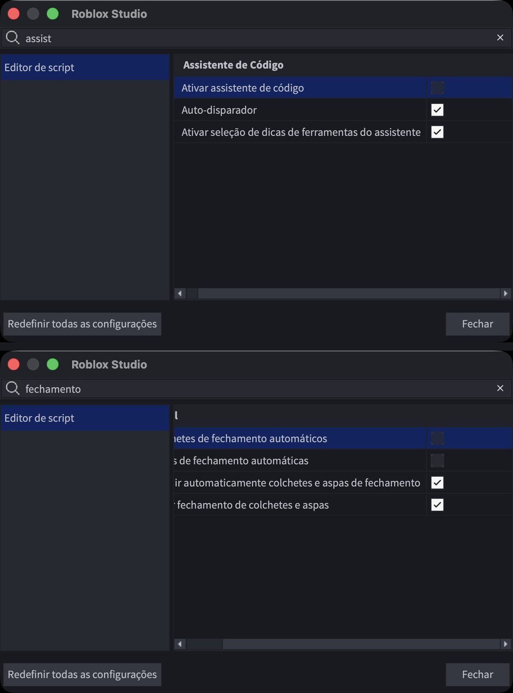
Foto da tela.
Hoje você vai digitar código. O Studio vem com duas ajudas que atrapalham quem está aprendendo: ele sugere linhas inteiras e fecha parênteses e aspas sozinho. Vamos desligar as duas.
No Windows: Arquivo → Configurações do Studio. No Mac: Roblox Studio → Configurações do Studio.
1. Na busca escreva assist e desmarque Ativar assistente de código.
2. Apague a busca, escreva fechamento e desmarque Colchetes de fechamento automáticos e Aspas de fechamento automáticas.
Feche a janela. Fica guardado no computador — se você já fez isto numa aula passada neste mesmo computador, é só conferir que as caixinhas continuam vazias.
- Não acho Configurações do Studio
- No Windows é o menu Arquivo, bem no canto de cima à esquerda da janela.
- A busca não acha nada
- Escreva só assist, sem acento e sem mais nada.
- Já está tudo desmarcado
- Ótimo — este computador já foi preparado. Feche a janela e siga.
- Por que desligar?
- Ligado, o editor escreve linhas que você não pediu, e o Tab aceita a sugestão em vez de recuar. Desligado, o que está escrito na aula é exatamente o que você digita.
Abra a lista do mundo e vá para a aba MODELO
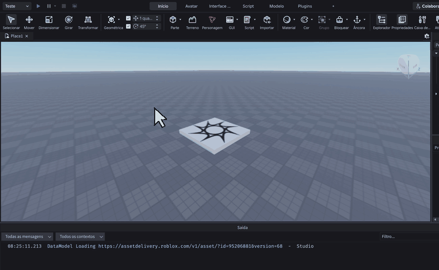
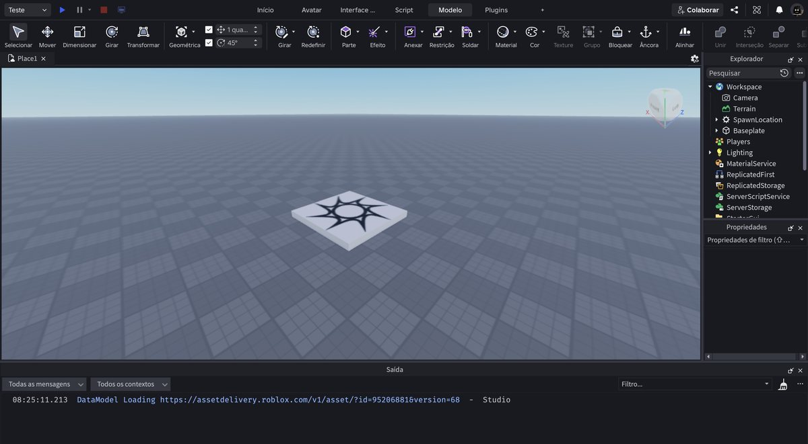
O clipe repete sozinho. Repare onde o cursor vai antes de clicar.
Foto da tela.
Na direita fica o Explorador. Clique na setinha à esquerda de Workspace para abrir a lista.
Depois, na linha de cima, clique na aba Modelo. Isto é obrigatório — os botões desta aula só existem nela.
- Não acho a aba Modelo
- Ela fica entre Script e Plugins.
- Cliquei na setinha e a lista fechou
- Você clicou duas vezes. Clique uma só.
Dê o nome de LARGADA para a plataforma onde você nasce
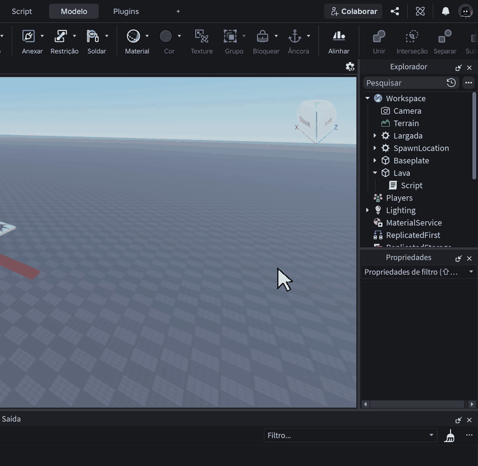
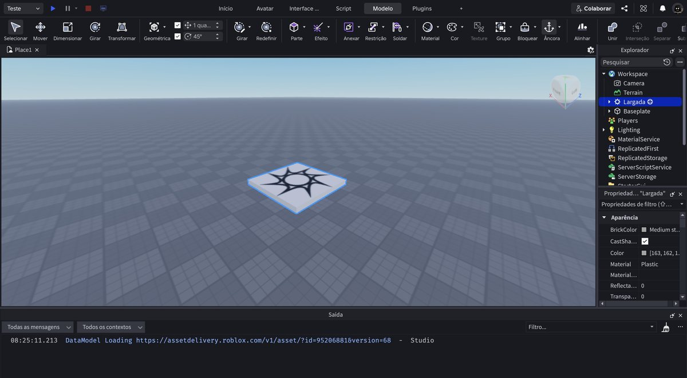
O clipe repete sozinho. Repare onde o cursor vai antes de clicar.
Foto da tela.
Aquela plataforma clara no meio do mundo chama-se SpawnLocation — é o lugar onde o seu boneco nasce. Ela já vem no Baseplate.
Botão direito nela na lista da direita → Renomear → escreva Largada → Enter.
Guarde este nome: no fim da aula o código vai procurar uma peça chamada exatamente Largada.
- Voltou para SpawnLocation
- Você apertou Esc. Termine com Enter.
- Não acho essa linha
- Ela fica dentro de Workspace. Abra a setinha do Workspace.
- Escrevi largada com L minúsculo
- Corrija. O código vai procurar Largada, com L maiúsculo.
Crie a lava
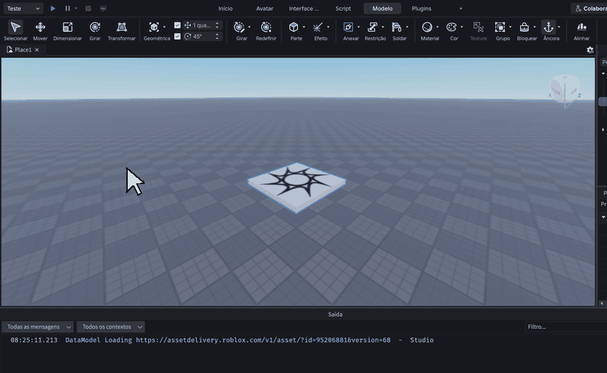
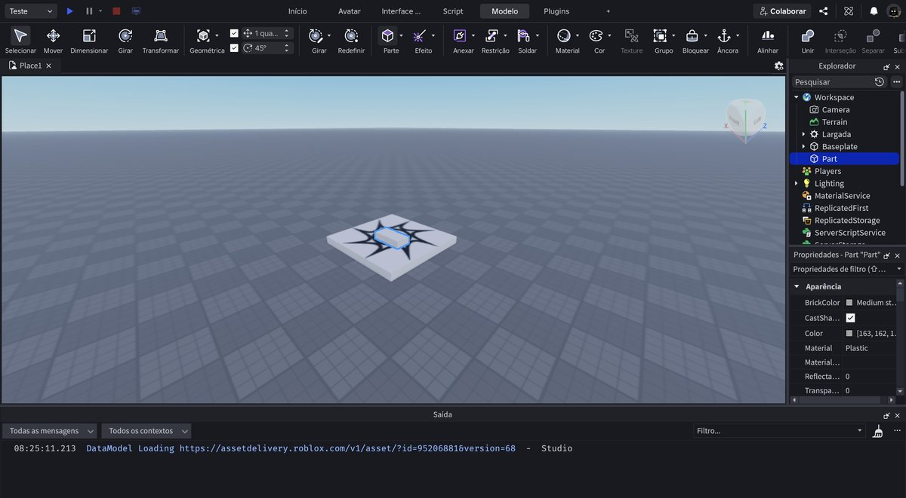
O clipe repete sozinho. Repare onde o cursor vai antes de clicar.
Foto da tela.
Clique em Parte — no desenho, não na palavra embaixo dele.
- Nada aconteceu
- Você clicou na palavra. Clique no desenho acima dela.
- Criei duas
- Aperte Ctrl + Z.
Deixe a lava comprida e estreita
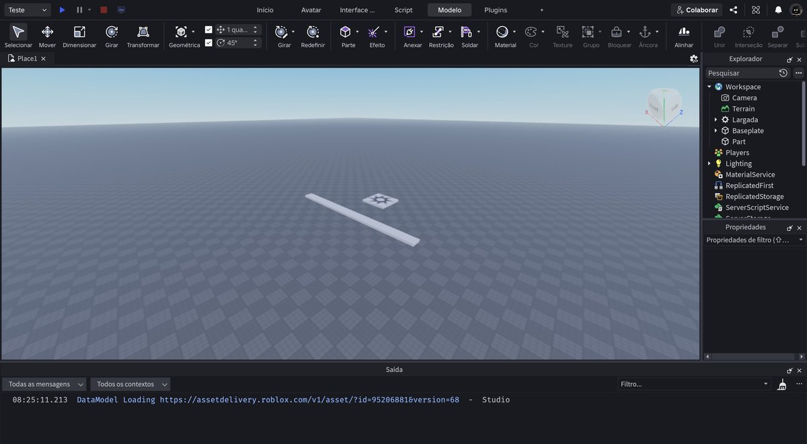
Foto da tela.
Na busca das Propriedades escreva size. Duplo clique no valor, Ctrl + A, escreva 60, 1, 4 e Enter.
Depois busque position e ponha 0, 0.5, -20.
Comprida para você não dar a volta, e estreita de propósito: 4 passos dá para pular com corrida. É isso que faz a travessia ser um desafio e não uma parede.
Apague a busca no fim.
- Só mudou um número
- O campo estava com parte do texto selecionada. Duplo clique no valor, Ctrl + A, e só então escreva.
- Sumiu tudo do meu mundo!
- Ctrl + Z várias vezes até tudo voltar. Isso acontece quando o Ctrl + A pega a lista de peças em vez do campo de texto, e aí o Delete apaga as peças. Depois do Ctrl + A, digite os números — nunca aperte Delete.
- Não acho a caixa de busca
- Fica logo abaixo do título Propriedades, escrita “Propriedades de filtro”.
- Perdi a peça de vista
- Clique no nome dela na lista, leve o mouse para o mundo 3D e aperte F.
Pinte de vermelho
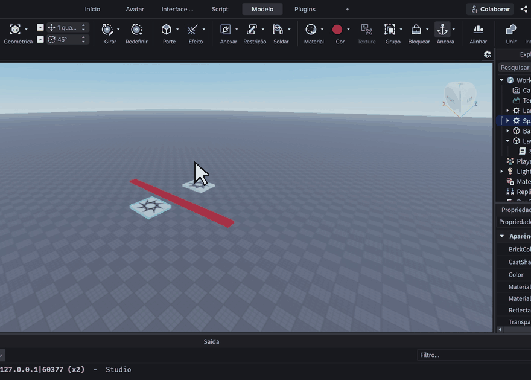
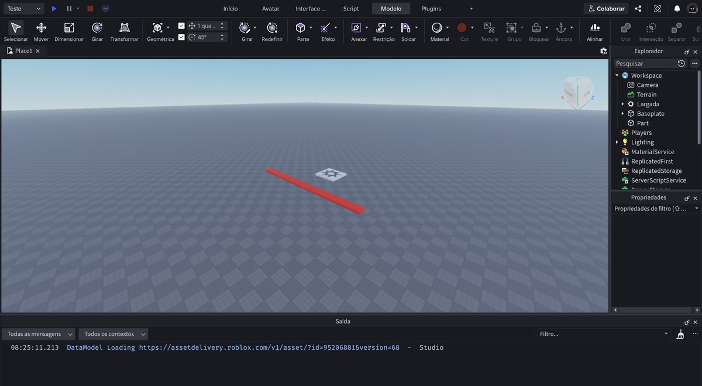
O clipe repete sozinho. Repare onde o cursor vai antes de clicar.
Foto da tela.
Três cliques, nesta ordem:
1. a setinha ao lado do círculo do botão Cor;
2. um hexágono vermelho;
3. o círculo do botão Cor — é esse que pinta.
- Escolhi e não pintou
- Falta o terceiro clique, no círculo do botão Cor.
- Continua sem pintar
- No rodapé do painel de cores há um interruptor “Clique no objeto para aplicar a cor”. Ele fica desligado.
Chame a peça de LAVA
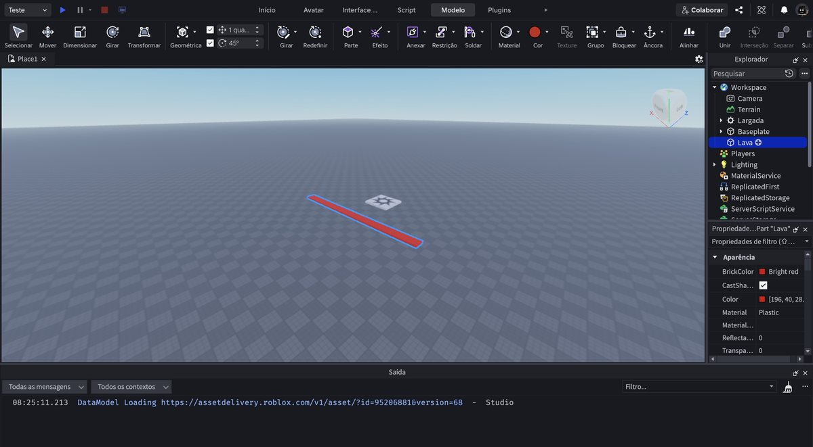
O clipe repete sozinho. Repare onde o cursor vai antes de clicar.
Foto da tela.
Botão direito em Part na lista → Renomear → Lava → Enter.
- Voltou para Part
- Você apertou Esc. Termine com Enter.
Ponha um Script dentro da lava
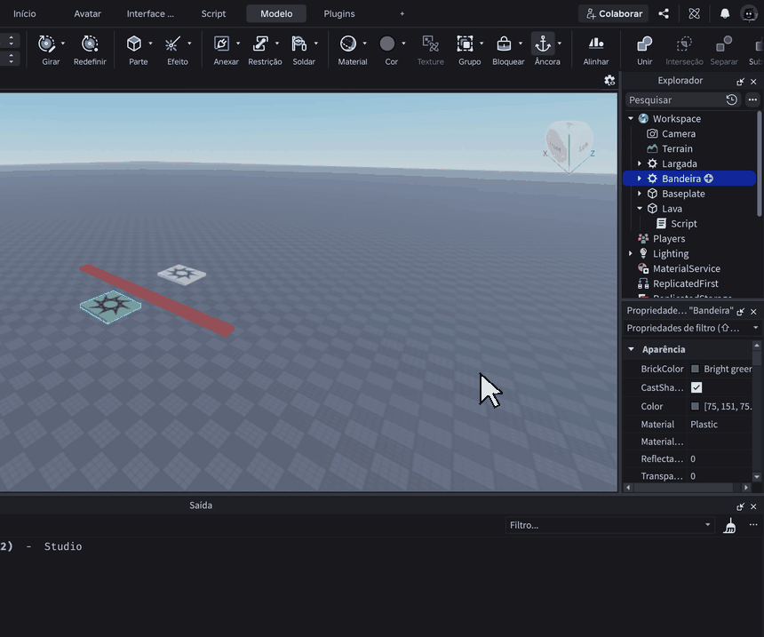
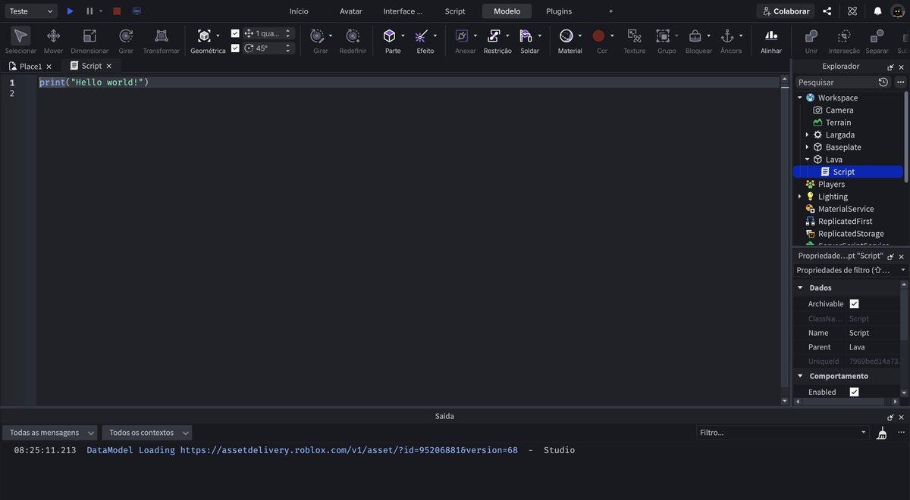
O clipe repete sozinho. Repare onde o cursor vai antes de clicar.
Foto da tela.
Clique em Lava na lista. Aparece um + depois do nome. Clique no + e escolha Script.
- O Script ficou fora da Lava
- Arraste-o por cima da palavra Lava na lista.
- Não aparece o +
- Clique uma vez na linha da Lava primeiro.
Escreva o código da lava
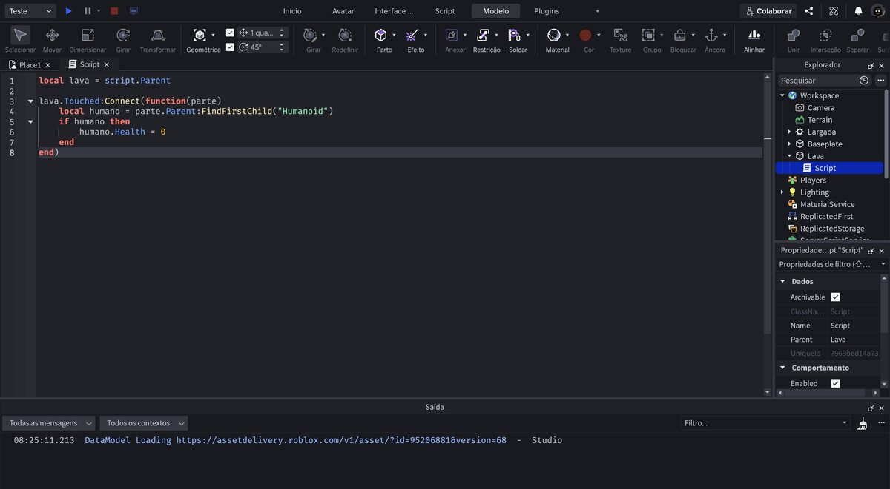
Foto da tela.
Este é o mesmo código da Aula 2. Apague a linha pronta (clique no fim dela e segure Backspace) e escreva:
- local lava = script.Parent
- lava.Touched:Connect(function(parte)
- local humano = parte.Parent:FindFirstChild("Humanoid")
- if humano then
- humano.Health = 0
- end
- end)
"I sai Ï).Se você guardou o arquivo da Aula 2, pode abrir e copiar. Mas escrever de novo grava melhor.
Não digite as linhas em cinza. O editor escreve os end sozinho quando você aperta Enter. E não aperte Tab — ele já empurra as linhas para dentro.
- Sobraram end a mais
- Você digitou os que o editor já tinha escrito. Apague os extras até o código ficar igual ao da aula.
- Risco vermelho no fim
- Falta o end) da última linha — com o parêntese.
- A aspa saiu errada (Ï, ä, ou duas aspas juntas)
- A aspa do teclado brasileiro é tecla muda. Antes de vogal ela vira trema; no fim da linha ela às vezes dobra. O conserto é sempre o mesmo: apague o que saiu errado e digite a aspa seguida da barra de espaço. Sai uma aspa limpa, sem espaço.
- Apareceu uma caixinha cinza com sugestões
- É o editor tentando adivinhar. Aperte Esc para fechá-la e continue digitando. Se você apertar Enter com ela aberta, ele escreve a sugestão no lugar do que você ia escrever.
Volte para o mundo e teste a travessia
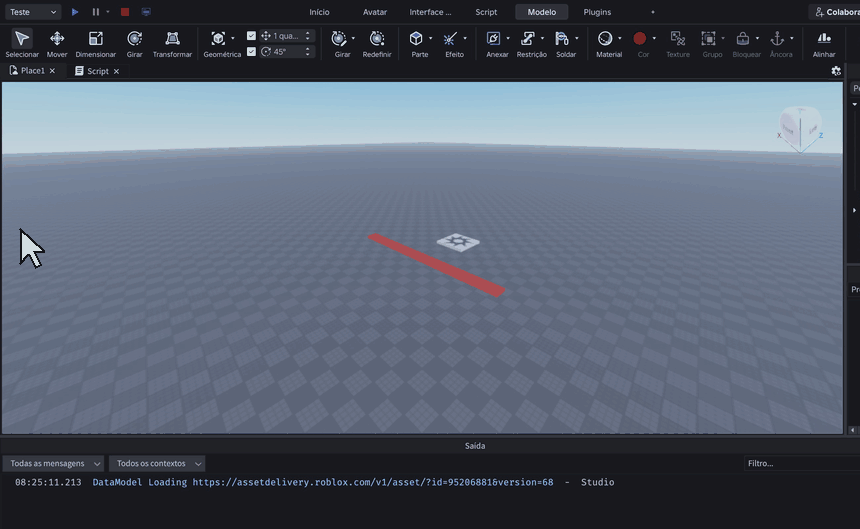
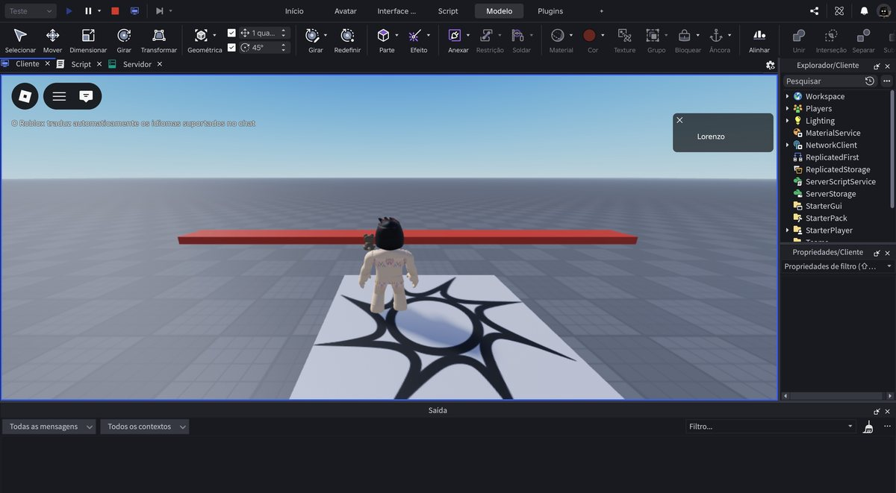
O clipe repete sozinho. Repare onde o cursor vai antes de clicar.
Foto da tela.
Clique na aba Place1, ao lado da aba Script. Depois aperte o ▶ azul.
Ande até a faixa vermelha e pule por cima dela com corrida: segure W e aperte a barra de espaço um pouco antes de chegar.
Depois entre nela de propósito, para ver que mata mesmo.
- Não consigo pular
- Pegue mais impulso: comece a correr de longe e pule antes da borda, não em cima dela.
- Não morro quando encosto
- Três conferências: o Script está dentro da Lava? Sobrou risco vermelho? Você clicou fora do editor antes de jogar?
- Nasci em cima da lava
- Sua lava está em cima da largada. Confira a position: o terceiro número tem de ser -20.
Pare o jogo
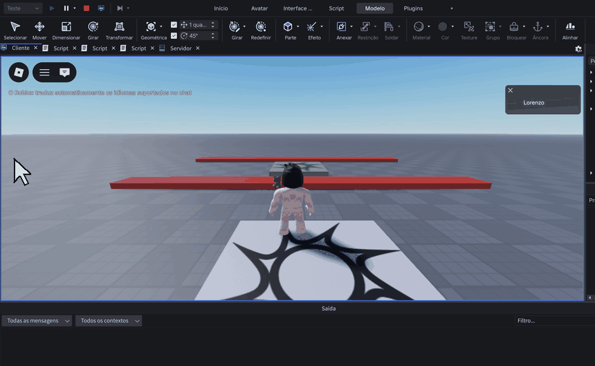
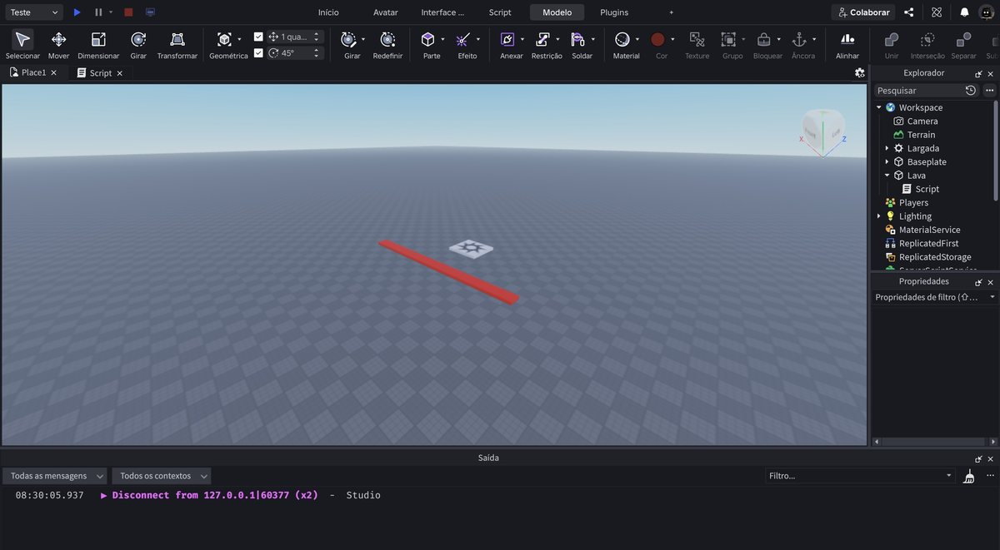
O clipe repete sozinho. Repare onde o cursor vai antes de clicar.
Foto da tela.
Aperte o quadrado vermelho.
Lembre: o que você constrói com o jogo rodando some quando o jogo para.
- Sumiu o que eu fiz
- Você fez com o jogo rodando. Refaça com o jogo parado.
Crie a bandeira — é um tipo de peça diferente
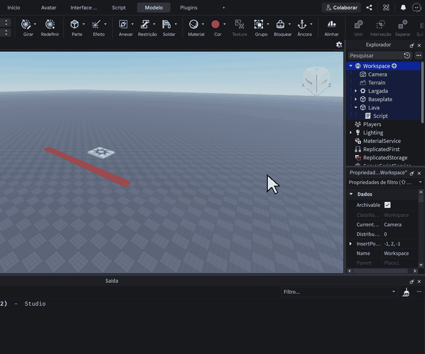
O clipe repete sozinho. Repare onde o cursor vai antes de clicar.
Foto da tela.
A bandeira não é uma Parte comum. Ela é uma SpawnLocation, o mesmo tipo de peça da Largada — é a única peça em que o Roblox sabe fazer alguém nascer.
Clique em Workspace na lista, clique no + e, na caixa Pesquisar objeto, escreva spawn. Clique em SpawnLocation.
- Não acho a caixa de pesquisar
- É a primeira linha do menu que abriu, no alto dele.
- Entrou dentro da Lava
- Você clicou no + da Lava. Apague com Delete e refaça com o Workspace selecionado.
- Nasceu em cima da largada
- É normal: ela nasce no meio do mundo. O próximo passo move.
Ponha a bandeira do outro lado da lava e pinte de verde
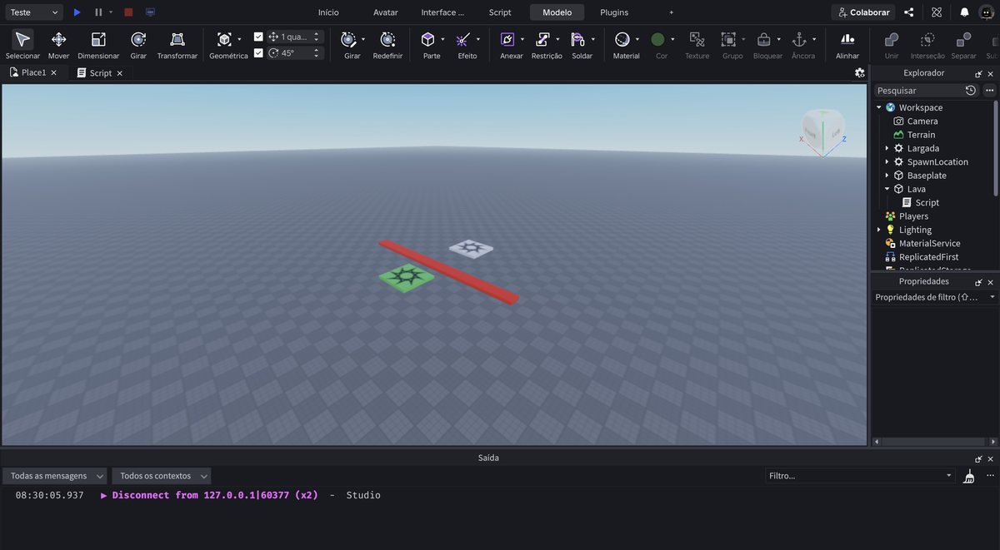
Foto da tela.
Na busca das Propriedades escreva position. Duplo clique no valor, Ctrl + A, escreva 0, 0.5, -32 e Enter.
Ela vai para depois da lava — só chega lá quem conseguiu pular.
Agora pinte de verde, com os mesmos três cliques do botão Cor. Verde porque é a cor de “você conseguiu”.
- Ficou em cima da lava
- O terceiro número é a distância. Use -32, e confira que a lava está em -20.
- Não consigo pintar
- Ela precisa estar selecionada: clique no nome dela na lista antes.
Chame de BANDEIRA
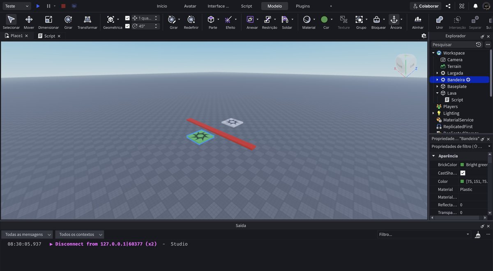
Foto da tela.
Botão direito nela na lista → Renomear → Bandeira → Enter.
- Tenho duas SpawnLocation na lista
- Uma é a Largada e a outra é a Bandeira. Se as duas ainda se chamam SpawnLocation, renomeie as duas.
Ponha um Script na bandeira e escreva o código
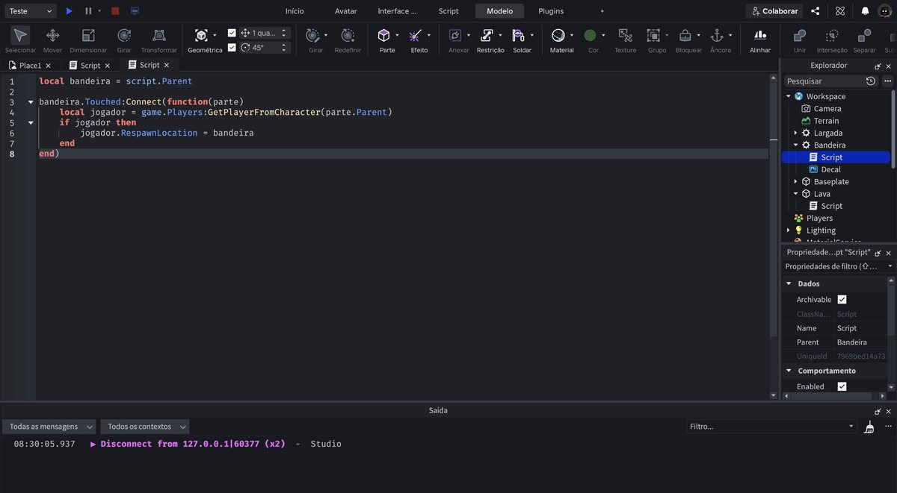
Foto da tela.
Clique em Bandeira, clique no +, escolha Script e apague a linha pronta. Depois escreva:
- local bandeira = script.Parent
- bandeira.Touched:Connect(function(parte)
- local jogador = game.Players:GetPlayerFromCharacter(parte.Parent)
- if jogador then
- jogador.RespawnLocation = bandeira
- end
- end)
Só uma linha é nova: jogador.RespawnLocation = bandeira. O resto é o mesmo desenho de sempre — “quando alguém encostar, descubra de quem é o boneco, e se for de um jogador, faça isto”.
- O que é RespawnLocation?
- É uma anotação que cada jogador carrega: “quando eu morrer, me ponha aqui”. Enquanto ninguém escreve nela, o Roblox escolhe sozinho.
- Sobraram end a mais
- Você digitou os que o editor já tinha escrito. Apague os extras.
- A aspa saiu errada (Ï, ä, ou duas aspas juntas)
- A aspa do teclado brasileiro é tecla muda. Antes de vogal ela vira trema; no fim da linha ela às vezes dobra. O conserto é sempre o mesmo: apague o que saiu errado e digite a aspa seguida da barra de espaço. Sai uma aspa limpa, sem espaço.
- Apareceu uma caixinha cinza com sugestões
- É o editor tentando adivinhar. Aperte Esc para fechá-la e continue digitando. Se você apertar Enter com ela aberta, ele escreve a sugestão no lugar do que você ia escrever.
Ponha um perigo DEPOIS da bandeira
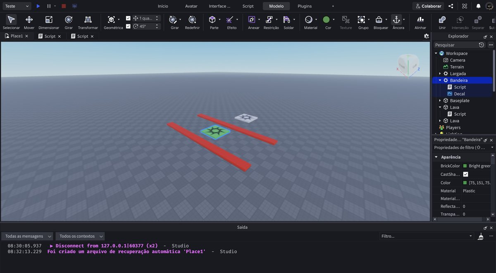
Foto da tela.
Sem alguma coisa que mate depois da bandeira, não dá para ver o checkpoint funcionando.
Botão direito na Lava da lista → Duplicar. A cópia nasce no mesmo lugar e já vem com o script dentro.
Com a cópia selecionada, busque position nas Propriedades e ponha 0, 0.5, -45.
- A cópia veio sem script
- Você duplicou a peça errada. Apague e duplique a Lava que tem o Script dentro.
- As duas lavas ficaram no mesmo lugar
- Você mudou a position da original. Ctrl + Z e faça de novo, com a cópia selecionada.
Conserte o nascimento sorteado
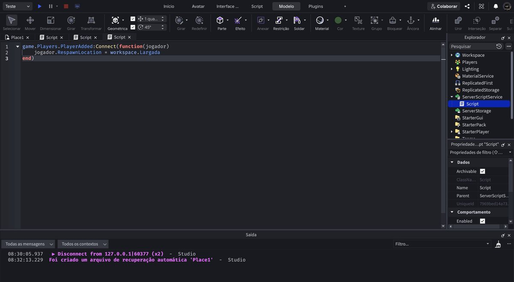
Foto da tela.
Tem um problema, e é bom você saber dele: o Roblox sorteia em qual plataforma de nascimento o jogador começa. Com a Largada e a Bandeira no mundo, de vez em quando você já começa o jogo do outro lado da lava — o que estraga o obby.
O conserto é um script curto que manda todo mundo começar na Largada.
Na lista da direita ache ServerScriptService (algumas linhas abaixo de Workspace; com o Workspace aberto ele fica fora da vista — role a lista para baixo com a rodinha do mouse, ou feche o Workspace na setinha dele), clique nele, clique no +, escolha Script, apague a linha pronta e escreva:
- game.Players.PlayerAdded:Connect(function(jogador)
- jogador.RespawnLocation = workspace.Largada
- end)
PlayerAdded é o mesmo evento da Aula 5: “quando um jogador entrar”. Aqui ele só escreve a anotação inicial — comece na Largada. Depois disso, quem muda a anotação é a bandeira.
- Diz que Largada não existe
- O nome da peça na lista tem de ser exatamente Largada, com L maiúsculo.
- Não acho ServerScriptService
- Escreva server na caixa Pesquisar do alto da lista.
- Pus no lugar errado
- Este script não vai numa peça: vai no ServerScriptService, porque vale para o jogo inteiro.
- Apareceu uma caixinha cinza com sugestões
- É o editor tentando adivinhar. Aperte Esc para fechá-la e continue digitando. Se você apertar Enter com ela aberta, ele escreve a sugestão no lugar do que você ia escrever.
Jogue: morra antes e depois da bandeira
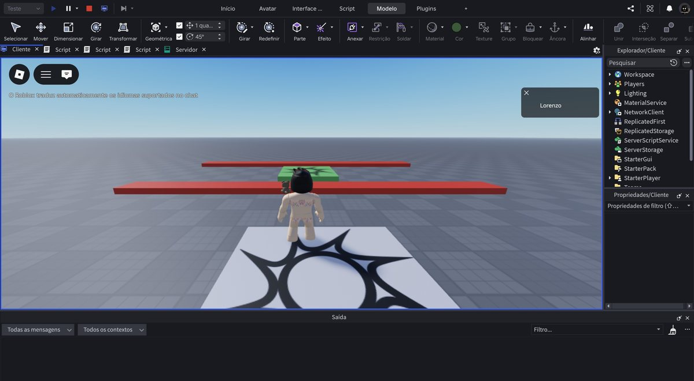
Foto da tela.
Volte para Place1 e aperte o ▶. Faça os dois testes, nesta ordem:
1. Entre na primeira lava de propósito, sem ter tocado na bandeira. Você renasce na largada.
2. Agora pule a primeira lava, passe por cima da bandeira verde e entre na segunda lava. Você renasce na bandeira.
É a aula inteira nesses dois testes.
- Nas duas vezes volto para o começo
- Você não encostou na bandeira. Passe por cima dela, andando — olhar não conta.
- Nas duas vezes volto para a bandeira
- Falta o script do passo 18, ou o nome Largada está diferente.
- Renasço e morro na hora
- A bandeira está encostando na lava. Afaste: bandeira em -32, lavas em -20 e -45.
Salve
Foto da tela.
Pare o jogo. Depois Ctrl + S → Salvar em arquivo → nome checkpoint.
Se quiser, publique também: Arquivo → Publicar na Roblox, como você aprendeu na Aula 4.
- Pediu para publicar
- Escolha Salvar em arquivo.
- Quero mais bandeiras
- Duplique a Bandeira — a cópia já vem com o script — e mude a position dela. Ponha uma lava entre cada duas.